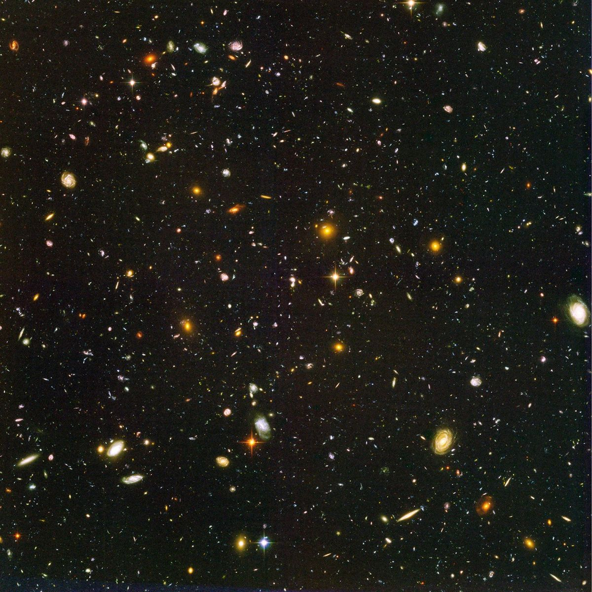
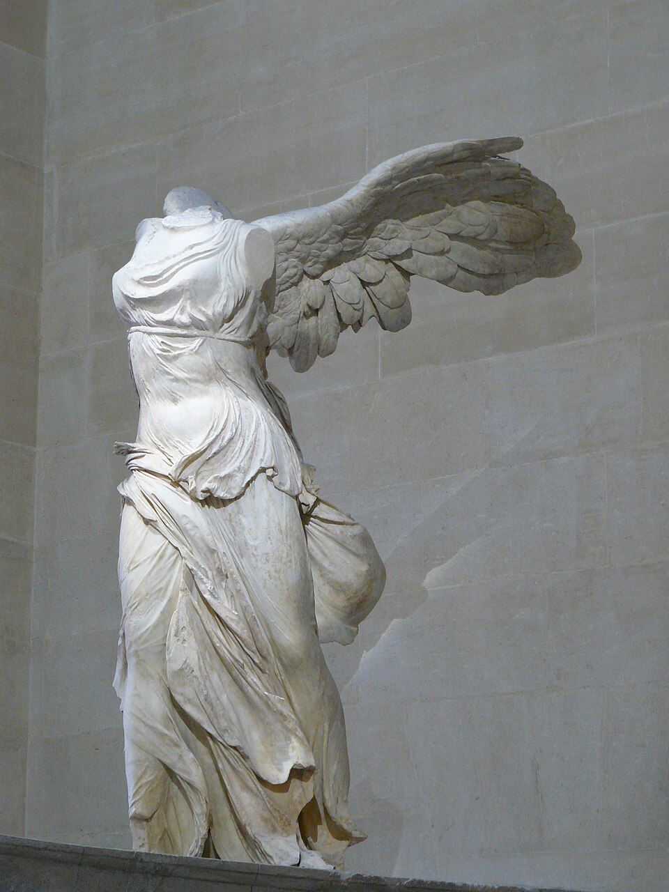

THE ARCHIVE OF EVERYTHING
もし、宇宙が
すべてを記憶している
としたら。
アカシックレコード。その起源、思想、人物、宗教との交差、そして科学的懐疑まで。巨大な記憶という概念を、信仰ではなく探索の対象として読む。
FRAGMENTS / 4
記憶は、言葉だけでは残らない。
宇宙・文明・知識・人間。巨大な記憶という概念を、四つの視覚断片として読む。


IMAGE SOURCES — Hubble Ultra Deep Field: NASA/ESA/STScI · Acropolis: Stymphal / CC BY-SA 4.0 · Boston Public Library: Rhododendrites / CC BY-SA 4.0 · Winged Victory: Lyokoï88 / CC BY-SA 4.0
FROM AKASHA TO RECORD
「記録」は、最初から
存在した概念ではない。
サンスクリット語の ākāśa は、古代インド思想で空間や虚空に関わる語として用いられてきました。しかし近代西洋で語られる「宇宙の記録庫」という意味は、神智学や人智学などを経て形成された別の文脈です。
アーカーシャの意味をたどる →WHO SHAPED THE IDEA?
ひとつの思想ではない。
複数の時代と人物が重なっている。
MEMORY EXPLORER
似ていることと、
同じであることは違う。
ノードを選ぶと、アカシックレコードとの関係を確認できます。線の種類は「歴史的関係」「概念的類似」「別概念」を示します。
DESCENT / MEMORY LAYER 04
記憶は、
ひとつの場所にはない。
宇宙のスケール、文明の痕跡、書物、身体、物語。アカシックレコードという概念は、人類が「すべてはどこかに残る」と想像してきた長い系譜の中で読むことができる。
ARCHIVE INDEX を開く →WHAT CAN WE ACTUALLY SAY?
神秘性を守るためにも、
証明されたことにしない。
体験談、哲学的類似、心理学的概念、量子力学の用語を、科学的実証と混同しないこと。この区別を保つことが、このサイトの編集原則です。
科学的評価と懐疑論を読む →TIMELINE OF THE AKASHIC IDEA
概念は、時間の中で
別の姿へ変わってきた。
古代インドのアーカーシャから、19世紀神智学、人智学、エドガー・ケイシー、ニューエイジ、現代まで。一本の「起源物語」に単純化せず、断絶も含めて追跡します。
OPEN FULL TIMELINE- ANCIENTĀKĀŚA
- 1875THEOSOPHY
- 1904+STEINER
- 20TH C.CAYCE
- LATE 20TH C.NEW AGE
- NOWCONTEMPORARY
EXPLORE BY QUESTION